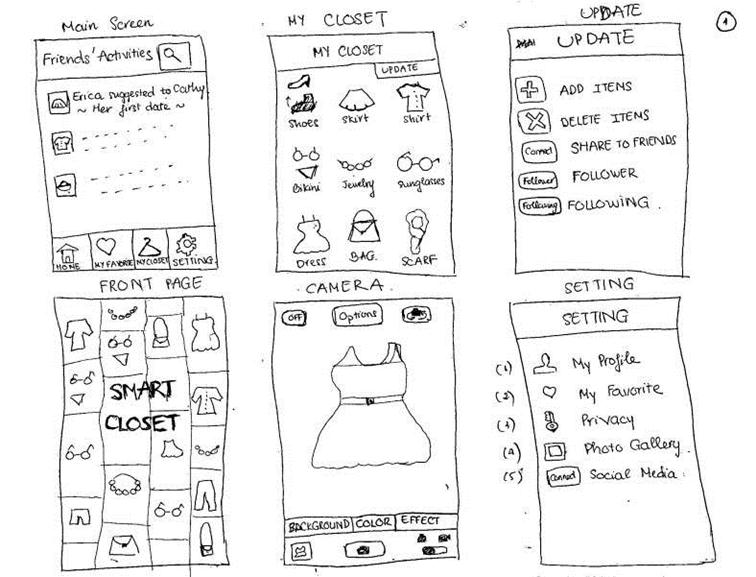

Step 3
low fidelity prototyping
Time:
30 minutes
Goal:To draw sketches of all interfaces (screens) of your solution that display the functionality. Draw as many interfaces as your solution allows.
Materials:Large index cards, scratch paper, pens, pencils
what is "fidelity"?
The fidelity of a prototype refers to how it conveys the look and feel of the final product. It describes the level of detail and realism. Therefore “low fidelity” means all the functionality will be present, but the design and level of detail will be basic.
what is "prototyping"?
Prototyping is designing the first draft of a product. The fastest and easiest form of prototype is a sketch, which is a low-fidelity prototype that's created by hand. Get good at using your hands to draw things that you want to create so that you can see them, communicate them, and evaluate them.
An example of a low fidelity prototype - you can use this as an idea of what your index cards might look like by the end of this step!
HOW TO
- Discuss with your team: what functionality will be present? What will the user be able to do with this solution? What interactions need to be made possible in your solution?
- Write down all ideas and the various “things to do” on the solution your team decided.
- Begin to sketch on index cards how you want to present that information in the application.
- Think about what buttons you will need (though don’t worry about what the buttons look like yet) and how you’d like to layout the information on the screen.
- Continue to draw out a series of interfaces that make up your solution.